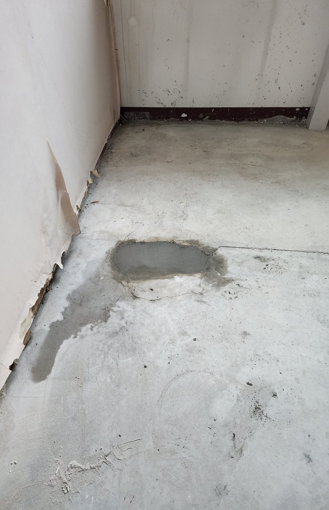
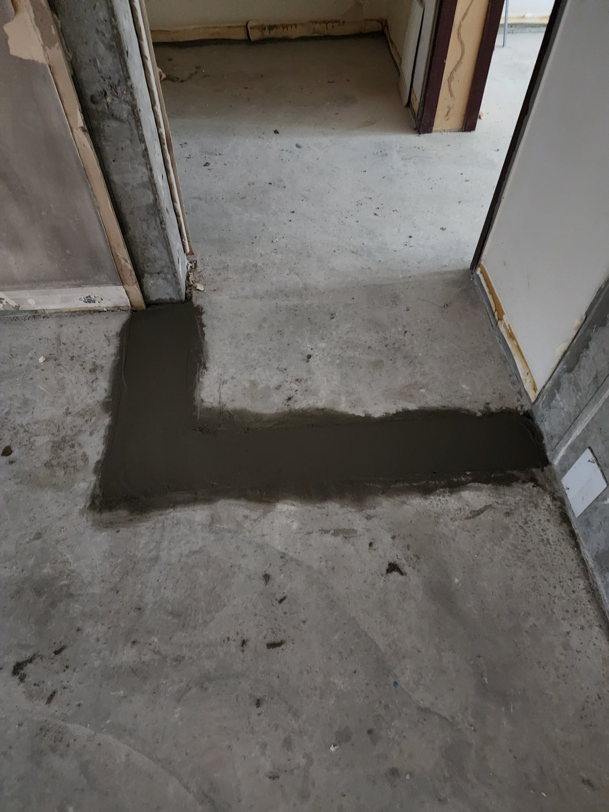
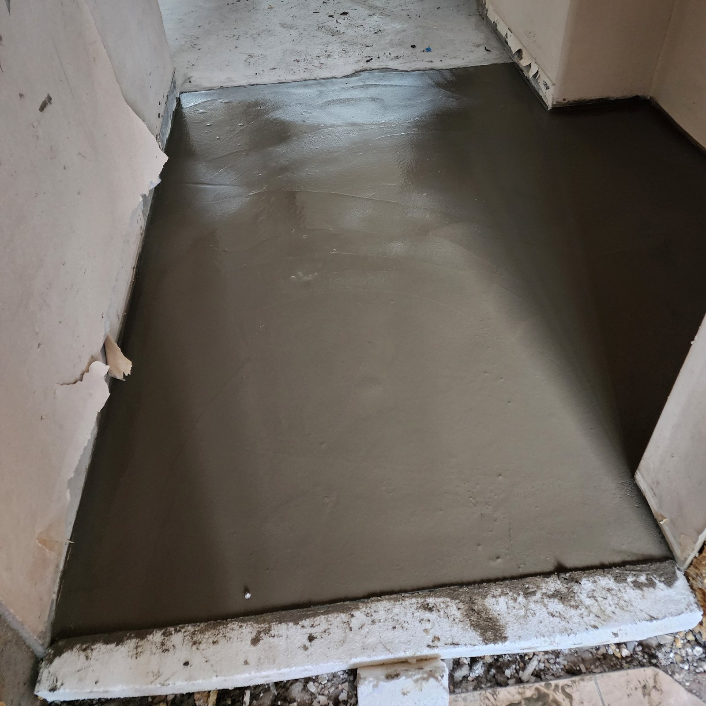

대전 노은동 열매마을 욕조 철거 자리 방수·바닥 부분 미장｜욕조를 걷어 낸 욕실과 바닥 바탕 정리

작업 핵심
현장 작업 한눈에 보기
- 현장
- 노은동 열매마을 · 욕실 욕조 자리·바닥
- 문제
- 욕조를 걷어 낸 욕실 바닥·벽 아래쪽
패이거나 높이가 맞지 않는 바닥 몇 군데 - 작업
- 욕조 자리 방수 도막
바닥 부분 미장 - 결과
- 도막을 바른 욕조 자리와 미장한 바닥 사진 확인
방수 자재명·시험·양생 시간은 미기재
대전 유성구 노은동 열매마을 작업입니다. 욕실 욕조를 걷어 낸 자리의 바닥과 벽 아래쪽에 파란색 방수 도막을 바르고, 집 안 바닥 몇 군데를 부분 미장으로 고르게 메웠습니다. 실제 사진 4장으로 소개합니다.
1. 욕조 자리 방수
대전 유성구 노은동 열매마을에서 욕실 욕조 자리 방수와 바닥 부분 미장을 했습니다. 2026년 11월 14일 사진을 순서대로 소개합니다.
욕조를 걷어 낸 자리의 바닥과 벽 아래쪽에 파란색 방수 도막을 발랐습니다. 욕조가 있던 자리는 그동안 욕조에 가려 있던 바닥과 벽 하단이 그대로 드러나는 곳이라, 다음 마감 전에 물이 스며들지 않도록 방수층을 먼저 만듭니다.
2. 바닥 패인 자리 메우기
바닥이 패인 자리를 미장으로 메웠습니다. 움푹한 바닥 위에 바로 바닥재를 깔면 그 자리가 꺼지거나 들뜰 수 있어, 바탕을 먼저 평평하게 맞춥니다.

3. 방 입구 바닥 미장
방 입구 쪽 바닥은 ㄱ자 모양으로 미장해 높이를 맞췄습니다. 문 쪽은 두 공간의 바닥이 만나는 자리라 높이 차이가 생기기 쉬운 곳입니다.

4. 넓게 편 바닥 미장
바닥 한 구간은 미장을 넓게 펴서 고르게 마감했습니다. 미장이 충분히 마른 뒤에 다음 공정을 이어 갑니다.

5. 확인한 범위와 상담 안내
이번 기록은 사진과 작업 메모로 확인되는 범위입니다. 방수 자재명·누수 시험·양생 시간은 자료가 없어 적지 않았습니다.
욕조를 들어내고 샤워 공간으로 바꾸려는 경우, 욕실 전체와 욕조 둘레, 바닥이 패이거나 들뜬 자리를 찍어 보내 주시면 방수와 바닥 정리 범위를 함께 안내합니다.